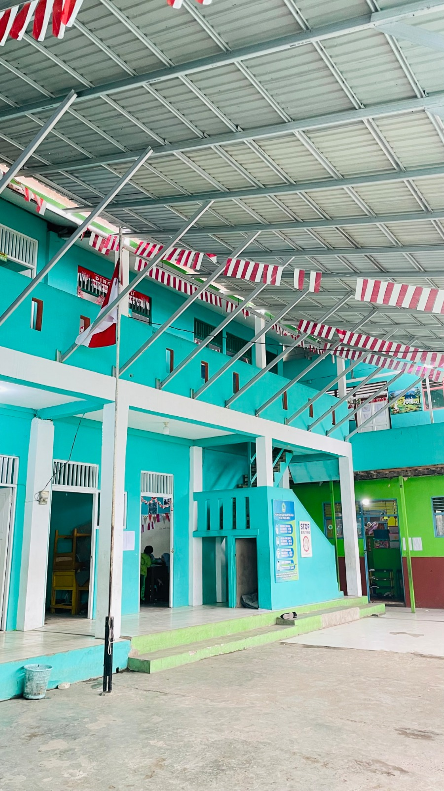

Kehidupan Beragama
Meningkatkan kualitas kehidupan beragama yang rukun dan berorientasi pada kemaslahatan.
Mengenal lebih dekat madrasah yang tumbuh bersama masyarakat dalam membentuk generasi berakhlakul karimah, berilmu, berprestasi dan terampil.
Selamat datang di website resmi MIS Al Muhajirin Banjarmasin. Website ini kami hadirkan sebagai media informasi, komunikasi serta sarana publikasi berbagai kegiatan, prestasi dan layanan madrasah kepada masyarakat.
MIS Al Muhajirin berkomitmen membentuk peserta didik yang berakhlakul karimah, unggul dalam prestasi, mencintai Al-Qur'an, serta mampu menghadapi perkembangan ilmu pengetahuan dan teknologi tanpa meninggalkan nilai-nilai keislaman.
Kami mengajak seluruh orang tua, alumni, dan masyarakat untuk bersama-sama mendukung terwujudnya lingkungan pendidikan yang religius, berkualitas, inovatif, dan ramah anak.

MIS Al Muhajirin Banjarmasin merupakan lembaga pendidikan Islam yang tumbuh dari kebutuhan dan inisiatif masyarakat terhadap pendidikan agama Islam. Keberadaannya menjadi bagian dari kehidupan pendidikan dan sosial masyarakat di kawasan Pemurus Luar, Banjarmasin Timur.
Karakter sosial madrasah mencerminkan semangat kebersamaan dan perjuangan kaum Muhajirin. Nilai gotong royong, solidaritas, religiusitas serta perkembangan bersama menjadi bagian penting dalam kehidupan madrasah.
Identitas dan informasi kelembagaan MIS Al Muhajirin Kota Banjarmasin.

Kota Banjarmasin
Komitmen MIS Al Muhajirin dalam mendukung pendidikan keagamaan dan tata kelola madrasah yang berkualitas.
Meningkatkan kualitas kehidupan beragama yang rukun dan berorientasi pada kemaslahatan.
Meningkatkan kualitas pendidikan pesantren, pendidikan keagamaan dan pendidikan umum berciri khas agama.
Meningkatkan tata kelola pemerintahan yang baik atau Good Governance.
MIS Al Muhajirin membentuk peserta didik dengan keseimbangan iman, ilmu, keterampilan dan karakter.
Beriman dan bertakwa kepada Allah SWT serta memiliki akhlak mulia.
Mahir dan terbiasa membaca Al-Qur'an serta menghafal Juz 30 dan surat pilihan.
Mampu berpikir kritis, kreatif dan inovatif dalam menghadapi permasalahan.
Terampil menggunakan teknologi informasi dan komunikasi secara bertanggung jawab.
Memiliki prestasi dalam bidang akademik maupun nonakademik.
Memiliki wawasan kebangsaan, lingkungan, budaya dan moderasi Islam.
Nilai yang menjadi bagian dari pembentukan karakter warga MIS Al Muhajirin.
Fasilitas yang menunjang kegiatan pendidikan, pembelajaran, pelayanan dan pembentukan karakter peserta didik.
Bergabung bersama lingkungan pendidikan yang menumbuhkan akhlak, pengetahuan, keterampilan dan kecintaan terhadap Islam.